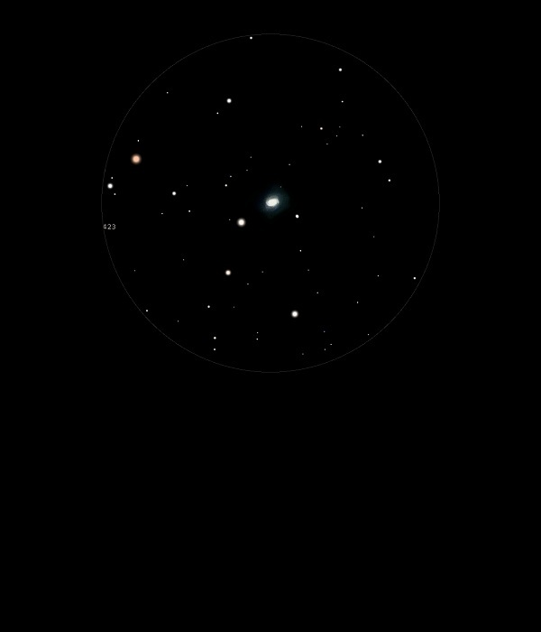

M58

Barred Spiral Galaxy in Virgo
NGC 4579
Mag 10.5
30/04/13
Slightly fainter than M59
Easy to find (same dec, only need to move equatorial axis) as M59-M60
Bright (mag 8!) star close
01/05/13
Large but very fuzzy